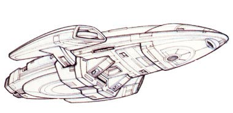
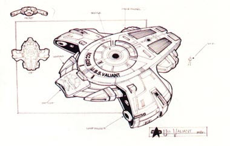
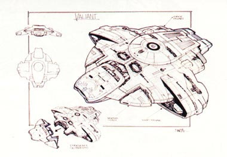
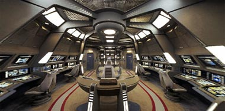
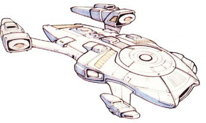
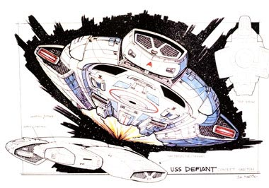
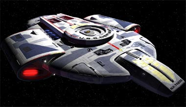
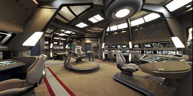
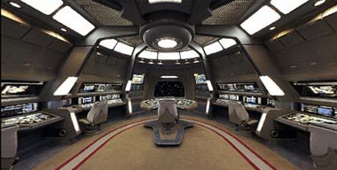

|

Publicado originalmente
em dezembro de 2001

Uma ponte para Benjamin
Sisko
Tudo sobre o
processo que se deu nos bastidores para a
introduo da nave experimental de combate Defiant na srie

|
Quando o produtor Ira Steven Behr apresentou pela primeira vez a Michael Piller a idia de trazer para Deep Space Nine uma nave que dividiria as atenes com a estao espacial que d nome a srie, ele tinha em mente uma verso maior dos Runabouts, as naves exploradoras conhecidas do pblico desde o primeiro episdio. Os motivos para a insero de uma nave regular na srie seriam dois: os diretores reclamavam que o pequeno espao do cenrio dos Runabouts no permitia muitos ngulos para fazer as tomadas, e os roteiristas por sua vez diziam que no conseguiam bolar cenas muito interessantes em um espao diminuto e que os telespectadores no engoliriam Sisko & cia combatendo os recm-criados Jem'Hadars com essas trs pequenas naves exploradoras. Piller passou ento a idia ao chefo Rick Berman.  "Os Jem'Hadars haviam destrudo uma nave da classe Galaxy, como a Enterprise-D, logo em seu episdio de estria", conta Ira Behr. "Ns criamos viles poderosos, e precisvamos de uma nave poderosa para os heris, mais poderosa do que trs simples naves exploradoras. Expliquei para Rick Berman que Deep Space Nine era uma srie diferente e precisaria de uma nave diferente. Ele no se ops muito. A falei que a nave teria de ter um dispositivo de camuflagem. Pronto. Ele no aceitou de maneira alguma, dizia que Gene Roddenberry no aprovaria se estivesse vivo, que a Federao no ficava espreita dos inimigos com dispositivos de camuflagem etc. Mas ao final concordou..." Sobre o desenvolvimento da nova nave, Ira conta mais: "eu no tive muito o que fazer em relao ao design da nova nave a no ser dizer como eu a queria. Queramos [a equipe de produo] pequenos quartos para a tripulao e que todos percebessem que aquela no era uma nave luxuosa, como a Enterprise-D ou at Voyager. A ponte de comando teria de ser funcional e no necessariamente com uma beleza esttica. Os painis de controle das funes da nave teriam de estar muito prximos, pois se algum explodisse em seu posto durante uma batalha, seu colega j poderia rapidamente virar-se e assumir sua estao de controle.", continua Behr, "mas de qualquer maneira a nave teria de ser agradvel externamente, sem parecer to ameaadora como de fato seria. A Frota Estelar no uma organizao terrorista, no quer levar o terror para o corao de seus inimigos", completa o produtor.   O roteiro de Ron Moore para o episdio de abertura da terceira temporada em que a nova nave seria introduzida, "The Search", apresentava-a com o nome de USS Valiant. Como a srie Voyager, com a nave do mesmo nome, estava sendo desenvolvida, Ron achou que no seria uma boa idia ter outra nave comeando com a letra "V". Sugeriu a mudana para "Defiant", lembrando da apario de uma nave com este nome no episdio "The Tholian Web" da Srie Clssica e obteve a aprovao. O histrico da Defiant seria que ela havia sido projetada h alguns anos pelo prprio Benjamin Sisko nos estaleiros da Frota Estelar, para ser usada em combate contra os Borgs. Sendo um prottipo teria ainda alguns probleminhas em seus sistemas que seriam resolvidos no decorrer das suas futuras misses. Segundo o designer Herman Zimmerman, veterano de Jornada e que projetou toda a parte interna da nave, ela seria a mais poderosa nave da Frota Estelar, levando em considerao seu tamanho. Zimmerman a comparou com um caa americano atual, rpido e com facilidade de lanar bombas, alm de fortemente armado. Em relao ao design interno disse que " pequeno l dentro, s vezes escuro, como um submarino. Certamente no para famlias e crianas".  Acostumado em desenvolver a "nave do episdio da semana", Jim Martin foi o responsvel pela criao do design externo da Defiant. Martin, alm de naves de menor expresso, j havia criado as naves Jem'Hadars que estrearam no ltimo episdio da segunda temporada, "The Jem'Hadar", e tambm criou naves Maquis, Cardassianas e Bajorianas. Desenvolver completamente uma nova nave da Federao, e que seria a protagonista da srie, o deixou animado. "Eu amo criar naves", disse Martin." a minha coisa favorita no departamento de arte. Eu tive a chance de trabalhar com Rick Sternbach no desenvolvimento dos Runabouts em 1992, mas criar a Defiant foi algo especial", completa Jim.  Seus primeiros desenhos, de uma verso bem maior do Runabout, foram rejeitados pelos produtores. Martin ento concentrou-se em desenvolver um modelo de nave da Federao que havia criado para um episdio da segunda temporada de DS9, mas que tambm foi rejeitado. Com algumas modificaes, o desenho original tornou-se o embrio da Defiant. Martin conta que "os produtores queriam algo que parecesse com dentes. Que estivesse pronto para entrar em batalha com os Borgs. Uma das primeiras decises foi que no teria naceles como as outras naves da Federao. Seria algo realmente novo. O visual que procurei dar em meus desenhos era de que a nave estava protegida por uma espcie de casco, como uma tartaruga. Eu pessoalmente acho que a natureza nos mostra designs excelentes. Algumas das melhores naves que criei foram baseadas em animais. Sempre que voc tem uma nave baseado em algo da natureza, tem uma grande nave. Esse meu segredo --no conte para ningum!", disse ele em uma entrevista para a revista Cinefantastique em 1996.  Com o design da Defiant aprovado pelos produtores, Martin tratou de refinar o desenho original e criar uma srie de detalhes. Para a construo do modelo que seria utilizado nas filmagens, o trabalho ficou por conta de Tony Meininger, que foi o responsvel pela construo do modelo da prpria Deep Space Nine. Ao final do processo de construo poucos detalhes criados por Jim Martin haviam sido modificados. Porm, nos primeiros desenhos, a nave era um pouco diferente da verso que conhecemos.  "Em meus primeiros desenhos, naquela seo bem na frente da nave havia um cockpit e a ponte de comando no ficava no topo do casco, mas sim no centro da nave --um lugar bem mais protegido. Na nave que vemos na TV hoje em dia, onde est o defletor principal (bem na frente da nave), ficaria meu cockpit recusado", explicou o designer. Enquanto isso Herman Zimmerman havia terminado os cenrios internos. Para o episdio inicial, "The Search", apenas a ponte de comando e quartos dos oficiais seriam necessrios. Como pedia o roteiro, os sets foram quase destrudos nesse episdio por causa de um ataque Jem'Hadar no quadrante Gama. Na reconstruo Zimmerman teve a oportunidade de ajustar os cenrios para a colocao das cmeras de filmagem e retirou uma mesa que ficava atrs da cadeira do capito. Mais tarde ele adicionou corredores e a seo de engenharia, garantindo bastante espao para que os diretores fizessem as cenas que quisessem, e que isso no fosse desculpa para que os roteiristas no criassem sequncias interessantes e movimentadas.   |